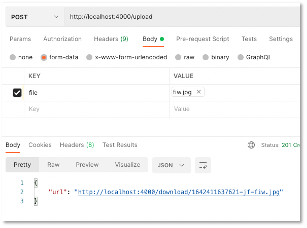
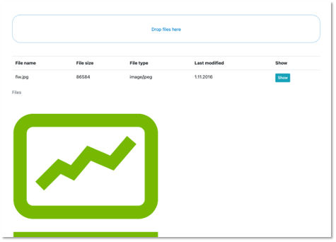

Dateiupload¶
Wir wollen hier zeigen, wie man in Angular und mit Node.js
- eine Dateiupload per Drag & Drop gestaltet und
- ein Backend so baut, dass es in einer MongoDB Bilder und andere Dateien speichern und abrufen kann.
Wir beginnen mit der Erstellung des Backends. Ich zeige das Vorgehen hier an einem separaten Backend. Sie können den Code aber natürlich auch in Ihr bestehendes Backend einbinden.
Backend¶
Wir erstellen uns ein Backend für den Dateiupload:
mkdir backend-fileupload
cd backend-fileupload
npm init
npm install cors express mongoose dotenv
npm install nodemon --save-dev
Sorgen Sie in der package.json dafür, dass Ihre main-Datei die server.js ist ("main": "server.js") und dass Sie Ihre Anwendung unter Verwendung von nodemon starten können ("scripts": {"watch": "nodemon ./server.js") }).
Wir erstellen eine db.js und eine .env:
1 2 3 4 5 6 7 8 9 10 11 12 | |
1 2 | |
Die server.js implementieren wie folgt:
1 2 3 4 5 6 7 8 9 10 11 12 13 14 15 16 17 18 19 20 21 22 23 | |
Das Backend lässt sich jedoch noch nicht ausführen, da die Dateien aus routes noch fehlen. Darum kümmern wir uns jetzt.
Multer und GridFS¶
Bis jetzt haben wir nur Daten im JSON-Format zwischen Frontend und Backend ausgetauscht und auch nur solche Daten in der MongoDB gespeichert. Bilder (und auch andere Dateien) sind FormData-Objects im multipart/form-data-Format. Zur Behandlung solcher Daten verwenden wir ein Middleware für unser Backend, namens Multer.
MongoDB speichert Daten bis zu einer Größe von 16Mb im Binärformat. Um auch größere Dateien (Bilder, Videos, pdf, ...) speichern zu können, werden die Dateien in chunks zerlegt und können dann aus diesen Stücken wieder zusammengesetzt werden. Dafür gibt es in der MongoDB eine GridFS-Spezifikation (siehe auch hier oder hier). Zur Verwendung von GridFS gibt es die beiden Pakte multer-gridfs-storage und gridfs-stream.
Wir installieren im Backend-Projekt alle drei Pakete und zeigen im Folgenden deren Verwendung:
npm install multer multer-gridfs-storage gridfs-stream
Die package.json sollte nun ungefähr so aussehen:
1 2 3 4 5 6 7 8 9 10 11 12 13 14 15 16 17 18 19 20 21 22 23 24 | |
Wir kümmern uns nun zunächst darum, Bilder in die MongoDB hochzuladen.
Upload von Bildern¶
Für den Upload der Bilder erstellen wir zunächst einen Ordner middleware und darin eine Datei upload.js. In dieser Datei wird unter Verwendung von Multer ein GridFsStorage eingerichtet. Die zu verwendende Collection benennen wir hier fileupload (siehe bucketName). Sie können diesen Namen frei wählen. Beachten Sie dann aber im Folgenden überall die Verwendung von fileupload (in der MongoDB entstehen die Collections fileupload.files und fileupload.chunks - siehe z.B. hier oder hier).
1 2 3 4 5 6 7 8 9 10 11 12 13 14 15 16 17 18 19 20 21 22 23 24 | |
Beachten Sie, dass wir beim Upload der Bilder für diese Bilder Dateinamen mithilfe von ${Date.now()}-jf-${file.originalname} erstellen bzw. festlegen. Damit diese Dateinamen eindeutig sind, wird mithilfe von Date.now() der aktuelle Zeitstempel verwendet. Der String -jf- in der Mitte kann natürlich auch durch Ihre Initialen ersetzt (oder weggelassen) werden. Außerdem wird auch noch der originale Dateiname verwendet. Insgesamt sollte sichergestellt werden, dass die Dateinamen eindeutig sind (deshalb auch Date.now()).
In Zeile 10 werden die Dateitypen festgelegt, die akzeptiert werden, hier png und jpeg. Diese Liste kann erweitert oder eingegrenzt werden.
Diese Middleware nutzen wir nun für den POST-Request des Bildes und erstellen einen Ordner routes und darin eine Datei upload.routes.js mit folgendem Inhalt:
1 2 3 4 5 6 7 8 9 10 11 12 13 14 15 16 17 18 19 20 21 | |
In Zeile 5 wird die multer-Middleware mit update.single('file') aufgerufen. Neben der Funktion .single(fieldname) stehen auch die Funktionen .array(fieldname[, maxCount]) und .fields(field) zur Verfügung, um gleichzeitig mehrere Dateien hochzuladen (siehe multer).
Als Response wird die URL zurückgegeben, unter der das Bild heruntergeladen werden kann (http://localhost:4000/download/${req.file.filename}).
Upload mithilfe von Postman¶
Das Hochladen der Bilder kann nun bereits getestet werden (dazu müssen in server.js noch die fehlerhaften Zeilen, in denen es um download und delete der Bilder geht, auskommentiert werden). Starten Sie das Backend. Öffnen Sie Postman und geben Sie als URL http://localhost:4000/upload ein und wählen als Anfragemethode POST. Klicken Sie auf Body und markieren dann form-data:

Geben Sie unter KEY den Schlüssel file ein und wählen Sie aus dem Dropdown-Menü File. Unter VALUE erscheint der Button Select Files. Klicken Sie darauf und wählen ein png- oder ein jpeg-Bild aus, das Sie hochladen wollen. Klicken Sie dann auf Send. Es erscheint:

Ich habe in diesem Beispiel die Datei fiw.jpg hochgeladen.
Wenn Sie sich die MongoDB anschauen, dann finden Sie darin die beiden Collections fileupload.files und fileupload.chunks. In fileupload.files sind die Metadaten des hochgeladenen Bildes zu finden, z.B.
{
"_id": {
"$oid": "61e53675d69a075573a1b1b5"
},
"length": 86584,
"chunkSize": 261120,
"uploadDate": {
"$date": "2022-01-17T09:27:18.096Z"
},
"filename": "1642411637621-jf-fiw.jpg",
"contentType": "image/jpeg"
}
Die dazugehörige _id finden Sie auch in fileupload.chunks (können Sie sich in der mongosh mit db.fileupload.chunks.find({ _id: "61e53675d69a075573a1b1b5" }) anschauen). Darin ist das Bild im Binary-Format gespeichert.
Download von Bildern¶
Für den Download der gespeicherten Bilder gehen wir ähnlich vor, wie beim Upload, benötigen dafür aber nicht mehr die multer-Middleware, dafür aber gridfs-stream. Wir erstellen im Ordner routes die Datei download.route.js mit folgendem Inhalt:
1 2 3 4 5 6 7 8 9 10 11 12 13 14 15 16 17 18 19 20 21 22 23 24 25 26 27 28 29 30 31 32 | |
GridFSBucket ist eine Klasse aus der Node.js-MongoDB-API. Diese hätten wir auch schon für das Upload verwenden können (siehe z.B. hier).
Da wir über den Dateinamen auf die Datei zugreifen wollen, benötigen wir zunächst die entsprechende _id der Datei in der fileupload.chunks-Collection. Dazu greifen wir mithilfe von find() auf die fileupload.files-Collection zu und ermitteln die _id. Die find()-Funktion gibt einen sogenannten Cursor auf das Array aller gefundenen Datensätze zurück. Mithilfe von forEach() durchlaufen wir dieses Array (enthält aber nur einen Datensatz) und ermitteln die _id. Mit der openDownloadStream()-Funktion der GridFSBucket()-Klasse öffnen wir den Download-Stream des Bildes und geben ihn als response res zurück.
Download mithilfe von Postman¶
Der Test des GET http://localhost:4000/download/:filename-Endpunktes ist einfach. Dazu verwenden wir einfach die URL, die durch den Upload als Response zurückgegeben wurde (im obigen Beispiel also "http://localhost:4000/download/1642411637621-jf-fiw.jpg"):
Geben Sie in Postman also Ihre URL ein, wählen GET und klicken Send. Es erscheint das Bild:

Delete von Bildern¶
Das Löschen der Bilder ist ganz ähnlich zum Download. Erstellen Sie die Datei routes/delete.route.js:
1 2 3 4 5 6 7 8 9 10 11 12 13 14 15 16 17 18 19 20 21 22 23 24 25 26 | |
Delete mithilfe von Postman¶
Zum Testen verwenden Sie den gleichen Dateinamen wie beim Download und wählen als Anfragemethode DELETE.
Frontend¶
Nun erstellen wir ein Frontend, in dem wir ein Bild per Drag&Drop hochladen können, verbinden das Frontend mit dem Backend und lassen uns das Bild wieder im Frontend anzeigen. Wir erstellen uns dazu eine Angular-Anwendung fileupload, Sie können aber den Code natürlich auch in ein bestehendes Frontend einbinden. Wir halten hier das Frontend bewusst einfach, verwenden kein Routing und auch nur die AppComponent.
ng new fileupload
Für das Drag&Drop verwenden wir hier das Paket ngx-file-drop. Wir installieren dieses Paket mithilfe von npm i ngx-file-drop und fügen noch Bootstrap hinzu:
cd fileupload
npm i ngx-file-drop
ng add ngx-bootstrap
Die app.component.html implementieren wir wie folgt:
1 2 3 4 5 6 7 8 9 10 11 12 13 14 15 16 17 18 19 20 21 22 23 24 25 26 27 28 29 30 31 32 33 34 35 36 37 | |
Die eigentliche Upload-Area ist dabei bereits mit
<ngx-file-drop dropZoneLabel="Drop files here" (onFileDrop)="dropped($event)" (onFileOver)="fileOver($event)" (onFileLeave)="fileLeave($event)">
</ngx-file-drop>
definiert. Mit der darunterliegenden Tabelle wollen wir nur die hochgeladenen Dateien auflisten. Ganz unten sehen wir noch ein div vor, in dem später das Bild angezeigt werden soll.
Im Hintergrund wirkt in der Upload-Area ein Button vom Typ type="file". Wenn Sie kein Drag&Drop verwenden, sondern die Eingabe der Datei direkt über einen Button realisieren wollen, dann achten Sie darauf, dass das Formular als enctype den Typ multipart/form-data zugewiesen bekommt:
<form action="/profile" method="post" enctype="multipart/form-data">
<input type="file" name="avatar" />
</form>
Die dazugehörige app.component.ts ist etwas umfangreicher und enthält bereits die dependency injection des BackendService, den wir noch erstellen müssen.
1 2 3 4 5 6 7 8 9 10 11 12 13 14 15 16 17 18 19 20 21 22 23 24 25 26 27 28 29 30 31 32 33 34 35 36 37 38 39 40 41 42 43 44 45 46 47 48 49 50 51 52 53 54 55 56 57 58 59 60 61 62 63 64 65 66 67 68 69 70 71 72 73 74 75 76 77 78 79 80 81 82 83 84 85 86 87 88 | |
Wenn ein Bild über die Upload-Area gezogen wird, erfolgt ein Aufruf der Funktion fileOver(), die aber nur eine Ausgabe auf der Konsole erzeugt. Ebenso die Funktion fileLeave(), die aufgerufen wird, sobald man das Bild wieder von der Upload-Area bewegt. Der eigentliche Upload erfolgt in der Funktion dropped(). Darin wird die Datei in eine FormData umgewandelt und diese FormData wird der Funktion upload() des BackendService übergeben. Fast alles andere sorgt dafür, die notwendigen Informationen aus der Datei auszulesen, um diese geeignet in die Tabelle auszugeben.
Anbindung an das Backend¶
Wir betrachten noch den BackendService, um die Anwendung starten zu können. Wir erstellen den Service mithilfe von
ng g s backend
und implementieren
1 2 3 4 5 6 7 8 9 10 11 12 13 14 15 16 17 18 19 20 | |
Achten Sie darauf, dass in der app.module.ts das HttpClientModule importiert ist:
1 2 3 4 5 6 7 8 9 10 11 12 13 14 15 16 17 18 19 20 21 22 23 24 | |
Ausführen der Anwendung¶
Um die Anwendung zu testen ist es wichtig, dass auch das Backend läuft. Wenn die Anwendung gestartet ist, erscheint folgende Ansicht:

Schieben Sie nun ein Bild über die Upload-Area und lassen Sie es dort los (im Beispiel fiw.jpg). Öffnen Sie auch die Developer Tools und betrachten Sie die Konsole. Im Code sind mehrere Ausgaben hinterlegt. Es erscheint:

Klicken Sie auf den Show-Button:

Laden Sie ruhig mehrere Bilder hoch und klicken abwechselnd auf die einzelnen Show-Buttons. Schauen Sie sich insbesondere die dropped()-Funktion aus der app.component.ts nochmal genauer an, um die Details nachzuvollziehen.
Success
Wir haben Bilder in der MongoDB gespeichert. Dazu haben wir ein Backend erstellt, mit dessen Hilfe in die MongoDB hochgeladen und von dort auch wieder ausgelesen werden können. Wir haben ein Frontend erstellt, in dem per Drag&Drop Bilder hochgeladen werden können. Dieses Frontend ist mit dem Backend verbunden. Es werden die Bilder vom Frontend über das Backend in die MongoDB gespeichert und von dort wieder ausgelesen und im Frontend angezeigt.